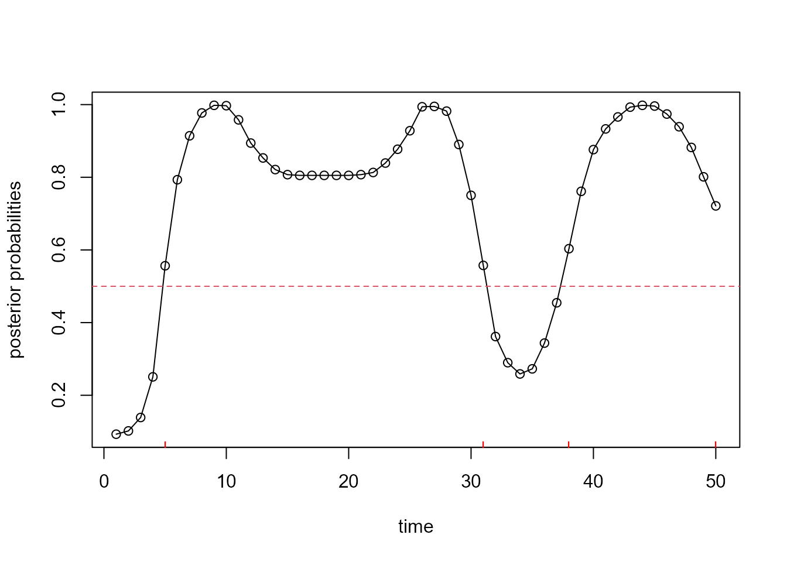

Introduction to BLiSS method
Paul-Marie Grollemund
2021-12-17
BlissIntro.Rmdlibrary(bliss)
This vignette describes step by step how to use the BLiSS method. Below, you can find the following implemented features:
- Simulate data to test the BLiSS model
- Obtain a sample of the posterior distribution with a Gibbs Sampler
- Plot the posterior distribution of the coefficient function and the posterior distribution of the support
- Compute the different Bayesian estimators
One single functional covariate case
Simulate a data set
In order to simulate a proper dataset for Bliss application, some characteristics must be specified:
- \(n\) (the number of observations),
- \(p\) (number of instant of measure),
- beta\(\_\)types (the shape of the coefficient function), and
- grids\(\_\)lim, a 2-vector (to define the domain of curves \(x_{i}(.)\)).
Based on these parameters, data can be simulated (curves \(x_{i}(.)\) and real values \(y_{i}\)) from the functional linear regression model by using the sim function, as suggested in the following chunck.
set.seed(1) param <- list( # define the "param" to simulate data Q=1, # the number of functional covariate n=100, # n is the sample size and p is the p=c(50), # number of time observations of the curves beta_types=c("smooth"), # define the shape of the "true" coefficient function grids_lim=list(c(0,1))) # Give the beginning and the end of the observation's domain of the functions. data <- sim(param) # Simulate the data
How to apply the Bliss method
In order to apply the Bliss method, the main function to use is fit\(\_\)Bliss. This function provides the following outputs:
- a posterior sample of the Bliss model,
- an approximation of the posterior distribution of the coefficient function,
- a piecewise constant estimate (stepfunction) of the coefficient function, which is computed thanks to an optimization algorithm,
- an estimation of the support, which shoulb be useful if your purpose is to detect periods for which the functional coviarate has an (linear) impact on the dependent scalar variable,
- the posterior densities of the posterior sample, which should be used to compute model choice criterion.
An important required argument of the previous function is param, which is a list containing:
- iter, the number of iterations for the Gibbs algorithm,
- burnin the number of iteration to drop at the beginning of the Gibbs Sampler,
- K, hyperparameter \(K\) of the Bliss model,
- grids, the grid of instant for which the curves \(x_{i}(.)\) are measured,
- prior\(\_\)beta, an argument specifying a prior distribution of the slope coefficient \(\beta\), (only the Ridge\(\_\)Zellner case is considered in this vignette),
- and phi\(\_\)l, an argument specifying a prior distribution for \(\ell\) the half-width of the intervals (only the Gamma` case is considered in this vignette),
Find below, an example of use of this function and a sketch of the structure of the returned object.
param <- list( # define the required values of the Bliss method. iter=1e3, # The number of iteration of the main numerical algorithm of Bliss. burnin=2e2, # The number of burnin iteration for the Gibbs Sampler K=c(3)) # The number of intervals of the beta res_bliss<-fit_Bliss(data=data,param=param,verbose=TRUE) #> Sample from the posterior distribution. #> Gibbs Sampler: #> Initialization. #> Determine the starting point. #> Start the Gibbs Sampler. #> 10% #> 20% #> 30% #> 40% #> 50% #> 60% #> 70% #> 80% #> 90% #> 100% #> Return the result. #> Coefficient function: smooth estimate. #> Coefficient function: Bliss estimate. #> Compute the approximation of the posterior distribution. #> Support estimation. #> Compute the (log) densities of the posterior sample. # Structure of a Bliss object str(res_bliss) #> List of 12 #> $ alpha :List of 1 #> ..$ : num [1:50] 0.0929 0.1019 0.1389 0.2507 0.5564 ... #> $ beta_posterior_density:List of 1 #> ..$ :List of 4 #> .. ..$ grid_t : num [1:512] 0 0.00196 0.00391 0.00587 0.00783 ... #> .. ..$ grid_beta_t : num [1:512] -3.1 -3.09 -3.07 -3.06 -3.04 ... #> .. ..$ density : num [1:512, 1:512] 6.42e-17 9.61e-17 1.43e-16 2.13e-16 3.17e-16 ... #> .. ..$ new_beta_sample: num [1:800, 1:50] 0 0 0 0 0 0 0 0 0 0 ... #> $ beta_sample :List of 1 #> ..$ : num [1:1001, 1:50] 0 0 -11.298 0.792 0 ... #> $ Bliss_estimate :List of 1 #> ..$ : num [1:50, 1] 0 0 0 0 2.89 ... #> $ chains : NULL #> $ chains_info :List of 1 #> ..$ :List of 2 #> .. ..$ estimates :List of 3 #> .. .. ..$ mu_hat : num 0.984 #> .. .. ..$ sigma_sq_hat : num 0.684 #> .. .. ..$ Smooth_estimate: num [1:50] 0.206 0.236 0.336 0.665 1.609 ... #> .. ..$ autocorr_lag: num [1:50, 1:3] -0.6888 -0.0546 0.1118 0.0637 0.0126 ... #> .. .. ..- attr(*, "dimnames")=List of 2 #> .. .. .. ..$ : NULL #> .. .. .. ..$ : chr [1:3] "mu" "sigma_sq" "beta" #> $ data :List of 6 #> ..$ Q : num 1 #> ..$ y : num [1:100] 0.474 0.647 0.2 2.832 0.275 ... #> ..$ x :List of 1 #> .. ..$ : num [1:100, 1:50] -1.09 -1.386 -1.037 -2.435 0.739 ... #> .. .. ..- attr(*, "scaled:center")= num [1:50] 1.135 1.055 0.952 0.879 0.779 ... #> ..$ betas :List of 1 #> .. ..$ : num [1:50] 0 0 0 0 3 3 3 3 3 3 ... #> ..$ grids :List of 1 #> .. ..$ : num [1:50] 0 0.0204 0.0408 0.0612 0.0816 ... #> ..$ x_save:List of 1 #> .. ..$ : num [1:100, 1:50] 0.045 -0.251 0.0974 -1.3006 1.8735 ... #> $ posterior_sample :List of 3 #> ..$ trace : num [1:1001, 1:11] -0.0491 -1.1677 -0.3608 -0.3996 -0.4947 ... #> .. ..- attr(*, "dimnames")=List of 2 #> .. .. ..$ : NULL #> .. .. ..$ : chr [1:11] "b_1" "b_2" "b_3" "m_1" ... #> ..$ param :List of 6 #> .. ..$ phi_l :List of 1 #> .. .. ..$ : num [1:49] 0.2263 0.1666 0.1227 0.0903 0.0665 ... #> .. ..$ K : num [1, 1] 3 #> .. ..$ l_values_length : num [1, 1] 49 #> .. ..$ potential_intervals :List of 1 #> .. .. ..$ : num [1:50, 1:49, 1:100] -1.109 -1.112 -1.083 -0.993 -0.857 ... #> .. ..$ grids :List of 1 #> .. .. ..$ : num [1:50] 0 0.0204 0.0408 0.0612 0.0816 ... #> .. ..$ normalization_values:List of 1 #> .. .. ..$ : num [1:50, 1:49] 0.186 0.237 0.271 0.274 0.273 ... #> ..$ posterior_density: num [1:1001, 1:6] 0.00 1.17e-145 2.20e-96 6.92e-16 2.10e-05 ... #> .. ..- attr(*, "dimnames")=List of 2 #> .. .. ..$ : NULL #> .. .. ..$ : chr [1:6] "posterior density" "log posterior density" "likelihood" "log likelihood" ... #> $ Smooth_estimate :List of 1 #> ..$ : num [1:50, 1] 0.206 0.236 0.336 0.665 1.609 ... #> $ support_estimate :List of 1 #> ..$ :'data.frame': 2 obs. of 2 variables: #> .. ..$ begin: num [1:2] 5 38 #> .. ..$ end : num [1:2] 31 50 #> $ support_estimate_fct :List of 1 #> ..$ : num [1:50] 0 0 0 0 1 1 1 1 1 1 ... #> $ trace_sann :List of 1 #> ..$ : num [1:50001, 1:16] 0.525 0.525 0.525 0.525 -0.216 ... #> .. ..- attr(*, "dimnames")=List of 2 #> .. .. ..$ : NULL #> .. .. ..$ : chr [1:16] "b_1" "b_2" "b_3" "b_4" ... #> - attr(*, "class")= chr "bliss"
Graphical results
This section presents how to obtain main graphical results (posterior quantities) derived from the Bliss method.
Coefficient function
Considering Functional Linear Regression model (FLR), and the specific scalar-on-function case, the major model parameter to infer is the coefficient function \(\beta(.)\). The following chunck shows how to plot the posterior distribution of the coefficient function:
param$ylim <- range(range(res_bliss$beta_posterior_density[[1]]$grid_beta_t), c(-5,5)) param$cols <- rev(heat.colors(100)) image_Bliss(res_bliss$beta_posterior_density,param,q=1)

Additionnaly to this plot, one could usually want to display a point estimate of the coefficient function (which is a function). By using the following code, you can access to: * Bliss estimate, a piecewise constant version of the coefficient function, and * the smooth estimate, the standard bayesian estimate of the coefficient function (standard means that it minimizes the posterior \(L^2\)-loss).
param$ylim <- range(range(res_bliss$beta_posterior_density[[1]]$grid_beta_t), c(-5,5)) param$cols <- rev(heat.colors(100)) image_Bliss(res_bliss$beta_posterior_density,param,q=1) # Bliss estimate lines(res_bliss$data$grids[[1]],res_bliss$Bliss_estimate[[1]],type="s",lwd=2) # Smooth estimate lines(res_bliss$data$grids[[1]],res_bliss$Smooth_estimate[[1]],lty=2) # True coefficient function lines(res_bliss$data$grids[[1]],res_bliss$data$betas[[1]],col="purple",lwd=2,type="s")

The solid black line is Bliss estimate, the dashed black line is the smooth estimate and the solid purple line is the true coefficien function.
Below, the function lines_bliss is used to plot the step function without the vertical lines, linking differents steps.
param$ylim <- range(range(res_bliss$beta_posterior_density[[1]]$grid_beta_t), c(-5,5)) param$cols <- rev(heat.colors(100)) image_Bliss(res_bliss$beta_posterior_density,param,q=1) # Bliss estimate lines_bliss(res_bliss$data$grids[[1]],res_bliss$Bliss_estimate[[1]],lwd=3) # Smooth estimate lines(res_bliss$data$grids[[1]],res_bliss$Smooth_estimate[[1]],lty=2) # True coefficient function lines_bliss(res_bliss$data$grids[[1]],res_bliss$data$betas[[1]],col="purple",lwd=3)

Support of coefficient function
According to the scientific problematic, one could aim to infer the coefficient function, but it is possible to alternatively focus only on the support of the coefficient function. In this case, the sign and the magniture of the coefficient function could be considered as nuisance parameters. Therefore, the Bliss method provides a specific estimation procedure for the support of the coefficient function (which relies on the posterior distribution of the coefficient function). It consists in deriving the posterior probabilities \(\alpha(t|D)\), for each \(t\) in the domain \(\mathcal T\) of the functional data, which correspond to the probabilities (conditionnaly to the observed data) that the support of the coefficient function covers the time \(t\).
To plot the posterior probabilities, you have to use the following code :
plot(res_bliss$alpha[[1]],type="o",xlab="time",ylab="posterior probabilities")

From these posterior probabilities, the support estimate is derived by thresholding the probabilities. Without prior information guiding the estimation procedure, the default threshold is 0.5. The estimate support is then defined as the collection of time \(t\) for which the posterior probability \(\alpha(t|D) > 0.5\).
plot(res_bliss$alpha[[1]],type="o",xlab="time",ylab="posterior probabilities") abline(h=0.5,col=2,lty=2) for(i in 1:nrow(res_bliss$support_estimate[[1]])){ segments(res_bliss$support_estimate[[1]]$begin[i],0.05, res_bliss$support_estimate[[1]]$end[i],0.05,col="red" ) points(res_bliss$support_estimate[[1]]$begin[i],0.05,col="red",pch="|",lwd=2) points(res_bliss$support_estimate[[1]]$end[i],0.05,col="red",pch="|",lwd=2) }

A resume of the support estimate is provided with:
res_bliss$support_estimate[[1]] #> begin end #> 2 5 31 #> 4 38 50
Multiple functional covariates
To avoid unnecesseray computational time, this section is not executed. You could figure out that the functions, objects and procedures are mostly similar to the previous one (single functional covariate case). The main differences are that:
- number of function covariates have to be specified in the
paramobject, and - posterior quantities are available in elements of output lists.
How to apply the Bliss method
param <- list( # define the required values of the Bliss method. iter=1e3, # The number of iteration of the main numerical algorithm of Bliss. burnin=2e2, # The number of burnin iteration for the Gibbs Sampler K=c(3,3)) # The number of intervals of the beta res_Bliss_mult <- fit_Bliss(data=data,param=param)
Graphical results
q <- 1 param$ylim <- range(range(res_Bliss_mult$beta_posterior_density[[q]]$grid_beta_t), c(-5,5)) param$cols <- rev(heat.colors(100)) image_Bliss(res_Bliss_mult$beta_posterior_density,param,q=q) lines(res_Bliss_mult$data$grids[[q]],res_Bliss_mult$Bliss_estimate[[q]],type="s",lwd=2) lines(res_Bliss_mult$data$grids[[q]],res_Bliss_mult$data$betas[[q]],col=2,lwd=2,type="s") ylim <- range(range(res_Bliss_mult$Bliss_estimate[[q]]), range(res_Bliss_mult$Smooth_estimate[[q]])) plot_bliss(res_Bliss_mult$data$grids[[q]], res_Bliss_mult$Bliss_estimate[[q]],lwd=2,ylim=ylim) lines(res_Bliss_mult$data$grids[[q]], res_Bliss_mult$Smooth_estimate[[q]],lty=2) q <- 2 param$ylim <- range(range(res_Bliss_mult$beta_posterior_density[[q]]$grid_beta_t), c(-5,5)) param$cols <- rev(heat.colors(100)) image_Bliss(res_Bliss_mult$beta_posterior_density,param,q=q) lines(res_Bliss_mult$data$grids[[q]],res_Bliss_mult$Bliss_estimate[[q]],type="s",lwd=2) lines(res_Bliss_mult$data$grids[[q]],res_Bliss_mult$data$betas[[q]],col=2,lwd=2,type="l") ylim <- range(range(res_Bliss_mult$Bliss_estimate[[q]]), range(res_Bliss_mult$Smooth_estimate[[q]])) plot_bliss(res_Bliss_mult$data$grids[[q]], res_Bliss_mult$Bliss_estimate[[q]],lwd=2,ylim=ylim) lines(res_Bliss_mult$data$grids[[q]], res_Bliss_mult$Smooth_estimate[[q]],lty=2)
Session informations
#> R version 4.0.3 (2020-10-10)
#> Platform: x86_64-w64-mingw32/x64 (64-bit)
#> Running under: Windows 10 x64 (build 19042)
#>
#> Matrix products: default
#>
#> locale:
#> [1] LC_COLLATE=French_France.1252 LC_CTYPE=French_France.1252
#> [3] LC_MONETARY=French_France.1252 LC_NUMERIC=C
#> [5] LC_TIME=French_France.1252
#>
#> attached base packages:
#> [1] stats graphics grDevices utils datasets methods base
#>
#> other attached packages:
#> [1] bliss_1.0.3
#>
#> loaded via a namespace (and not attached):
#> [1] zip_2.1.1 Rcpp_1.0.7 nloptr_1.2.2.2
#> [4] bslib_0.2.4 compiler_4.0.3 jquerylib_0.1.3
#> [7] plyr_1.8.6 tools_4.0.3 boot_1.3-25
#> [10] digest_0.6.27 lme4_1.1-23 statmod_1.4.34
#> [13] nlme_3.1-149 jsonlite_1.7.2 evaluate_0.14
#> [16] memoise_1.1.0 lattice_0.20-41 rlang_0.4.10
#> [19] Matrix_1.2-18 openxlsx_4.2.2 rstudioapi_0.13
#> [22] rockchalk_1.8.144 yaml_2.2.1 pkgdown_1.6.1
#> [25] xfun_0.25 RcppArmadillo_0.10.1.2.0 stringr_1.4.0
#> [28] knitr_1.30 desc_1.2.0 fs_1.5.0
#> [31] sass_0.3.0 systemfonts_0.3.2 rprojroot_2.0.2
#> [34] grid_4.0.3 R6_2.5.0 foreign_0.8-80
#> [37] rmarkdown_2.10 minqa_1.2.4 carData_3.0-4
#> [40] magrittr_2.0.1 htmltools_0.5.1.1 MASS_7.3-53
#> [43] kutils_1.70 splines_4.0.3 assertthat_0.2.1
#> [46] xtable_1.8-4 ragg_0.3.1 stringi_1.5.3
#> [49] crayon_1.3.4